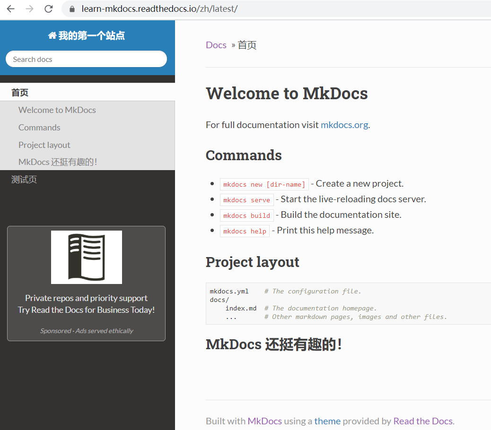

使用 Github Pages 发布
这里将使用 GitHub Desktop 做演示，电脑里没有 GitHub Desktop 的小伙伴可以点此自行下载。
首先，我们新建一个仓库，Name为learn-mkdocs，Local path为仓库存储路径：
然后，将my-poject中的所有文件全部复制到learn-mkdocs里：

这时 GitHub Desktop 会显示出文件夹的更改，点击Publish repository将文件夹内容推送到 GitHub 云端，这里我选择了将仓库公开：


然后仓库就成功推送到云端了，如果此时你查看自己网页版的 GitHub 页面，是可以看到新建的learn-mkdocs仓库的。
下面就是最后一步了，在learn-mkdocs路径下，打开命令提示符，执行mkdocs gh-deploy命令，成功之后，会生成一个网址，打开那个网址就可以看到你自己编写的网站啦~

从下图可以看出，这里已经不是本地地址了，整个站点已经托管到了 GitHub 上了~至此，你已经学会了搭建并发布属于自己的站点了，恭喜鸭！

使用 Read the Docs 发布
使用 Read the Docs 发布前，请确保theme为readthedocs，不然可能无法成功构建网页。如果不了解如何设置theme，可以点此学习。如果theme设置没有问题，就请继续往下看吧。
首先使用自己的 GitHub 账号注册 Read the Docs 账号，然后选择Import a Project。

在导入代码库时，如果没有出现想要导入的库，可以点击右上角的刷新按钮，然后将库导入。

接下来，再设置项目详情时，勾选编辑项目高级选项，点击下一步。
将文档类型设为Mkdocs，语言设为Chinese。

设置完成后，点击Build version。
构建成功后，点击阅读文档就可以看到最终的成果啦！
